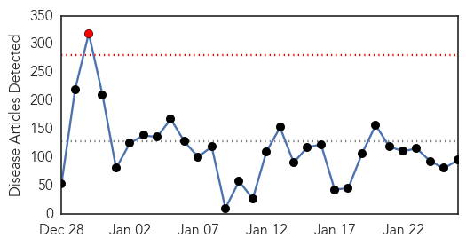
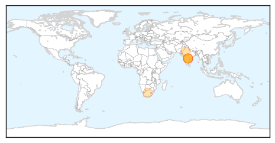
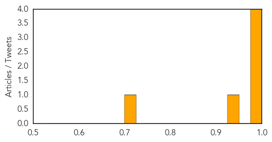

Ebola
30-Day Web Trend
1 alerts, 0 warnings

30-Day Twitter Trend
0 alerts, 0 warnings

Article Locations

Article Confidences
Top Articles:
- 1.000
- President Koroma was wrong to relax Ebola restrictions amid fear of Ebola resurgence
- 1.000
- Tide turning in Ebola fight after hard lessons Republican American
- 1.000
- Health authorities report 3 new Ebola cases in Liberia, previously declared Ebola free
- 1.000
- Tide Turning in Ebola Fight After Hard Lessons
- 1.000
- Senegal reopens land border with Ebola-hit Guinea
- 1.000
- WHO executive board approves Ebola reform proposals
- 1.000
- ‘Only five Ebola cases in Liberia now’
- 1.000
- Tide Turning In Ebola Fight After Hard Lessons
- 1.000
- Tide Turning In Ebola Fight After Hard Lessons
- 1.000
- Ebola virus epidemic: global picture and impact on children
- 0.999
- Ebola is not the end of the world, and it can be beaten
- 0.999
- Senegal reopens land border with Ebola-hit Guinea
- 0.999
- Senegal reopens land border with Ebola-hit Guinea
- 0.999
- Report by the Director-General to the Special Session of the Executive Board on Ebola
- 0.998
- Single new case can reignite Ebola outbreak if vigilance lost, says MSF - TRFN
- 0.998
- Single new case can reignite Ebola outbreak if vigilance lost, says MSF
- 0.998
- Dramatic decline in Ebola cases reported; West African countries remain 'cautiously optimistic'
- 0.998
- Only 5 cases of disease left in Liberia
- 0.998
- Senegal reopens land border with Ebola-hit Guinea
- 0.997
- WHO vows reform after Ebola ‘shocks’
- 0.997
- The Ebola heroes who are giving their lives for others
- 0.997
- Ebola’s Other Victims: One-Third of the World’s Gorillas and Chimpanzees
- 0.997
- Single new case can reignite Ebola outbreak if vigilance lost, says MSF - TRFN
- 0.996
- The Latest Developments
- 0.996
- Thai police hunt for serial rapist linked to 12 cases involving elderly women
- 0.996
- Ebola: UN health agency urges better global preparedness against future outbreaks
- 0.996
- Ebola death toll is slowing, but what next for blighted West African countries?
- 0.996
- WHO needs to repair reputation after bungling Ebola
- 0.996
- Anger, mistrust in Guinea villages hinders battle to beat Ebola
- 0.994
- After Ebola: What next for West Africa’s health systems
- 0.993
- What next for West Africa's health systems
- 0.991
- Ebola nurse leaves hospital
- 0.991
- Presby Health Service distributes equipment to health workers.
- 0.990
- Many Villages In Guinea Mistrust Government And Health Workers, Deny Ebola Treatments
- 0.989
- Guinea's Grand Imam Pulls No Punches In His Ebola Message
- 0.989
- Guinea's Grand Imam Pulls No Punches In His Ebola Message
- 0.989
- Guinea's Grand Imam Pulls No Punches In His Ebola Message
- 0.989
- Guinea's Grand Imam Pulls No Punches In His Ebola Message
- 0.989
- Guinea's Grand Imam Pulls No Punches In His Ebola Message
- 0.989
- Guinea's Grand Imam Pulls No Punches In His Ebola Message
- 0.989
- Guinea's Grand Imam Pulls No Punches In His Ebola Message
- 0.988
- Ebola death toll is slowing, but what next for blighted West African countries?
- 0.987
- Guinea's Grand Imam Pulls No Punches In His Ebola Message
- 0.986
- Ebola will not be gone in any country until it is gone from every country
- 0.984
- Health Highlights
- 0.984
- Ebola crisis: WHO promises reforms - Panorama
- 0.984
- Liberia 'optimistic' of zero Ebola cases by end-Feb
- 0.984
- Ebola crisis: Oxfam calls for recovery Marshall Plan
- 0.983
- After Ebola: Why Rural Development Matters in a Time of Crisis
- 0.981
- Will WHO handle the next crisis better than Ebola?
Showing top 50 articles...
Top Tweets:
- 0.946
- CDC’s Team 5 scores a 10 fighting Ebola in Sierra Leone. Read more: http://t.co/c3T6g1Qp8x CDCinthefield
- 0.897
- RT: Ebola Discoverer Joins’s Tackle Ebola Initiative http://t.co/VVm974SS0S Africa
- 0.824
- RT: Good, frank Q/A with Peter Piot, a discovered of Ebola. Leading scientist warns that Ebola eradication may be elusive h…
- 0.775
- .@UNICEF More than 10k children in West Africa have been left without 1 or both parents from Ebola http://t.co/zXD3kEci71
- 0.740
- After Ebola: What next for West Africa’s healthsystems @irinnews http://t.co/6PDiYnP8cS
- 0.727
- RT: After Ebola: What next for West Africa’s health systems - new analysis by http://t.co/XjSG9UHXLh
- 0.629
- .@WHO Flashy rebuild of WHO's Ebola site. Nice pictures, graphics. But where does one find the numbers, details?
- 0.619
- EBOLA: Principal of self-sacrifice guides doctor fighting deadly disease:... http://t.co/zTk2srdlVm
- 0.593
- .@WHO guidance on infection prevention helps health workers in Ebola-affected countries protect themselves http://t.co/51fyHbAEyK
- 0.589
- Monrovia; ebola vaccine trials in few days "globally unprecedented", Liberian Dr Stephen Kennedy tells me. 600, then 27000 volunteers.
- 0.540
- Ethiotel is part of the Campaign so you SMS 'Stop Ebola' to 7979 to Donate $1 to help us fight ebola 24thAUsummit africaagainstebola
Swine Flu
30-Day Web Trend
5 alerts, 6 warnings

30-Day Twitter Trend
0 alerts, 0 warnings

Article Locations
Article Confidences
Top Articles:
Top Tweets:
-
No tweets found for Jan 26, 2015